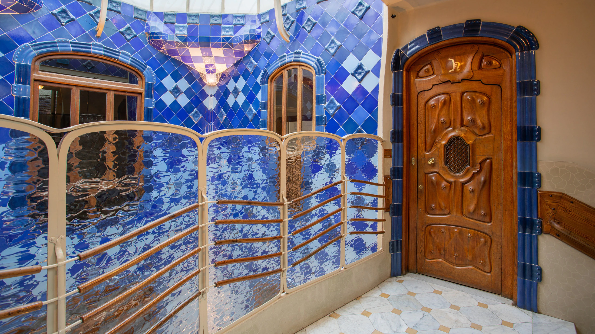
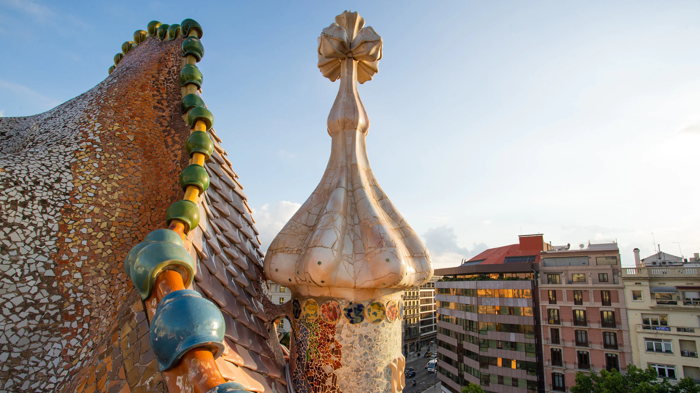
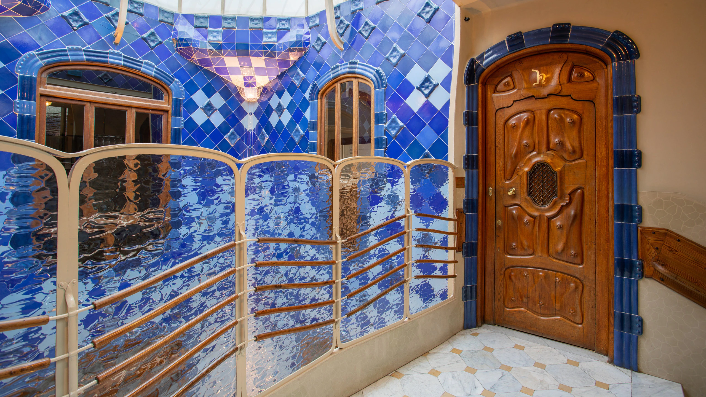
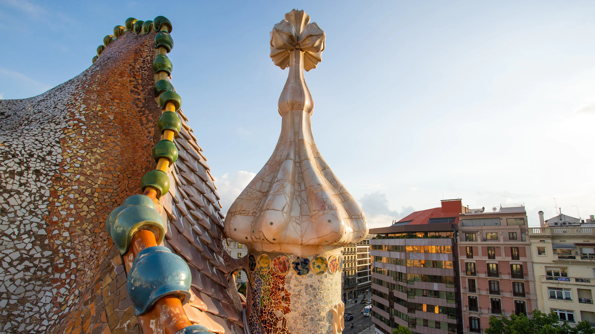

El modernismo rechaza el estilo poco atractivo de la arquitectura industrial de la primera mitad del siglo XIX, y desarrolla nuevos conceptos arquitectónicos basados en la naturaleza, que consisten en los materiales de construcción que se emplean, en las formas de los edificios y en las figuras de sus fachadas. Los arquitectos y sus escultores colocan en el exterior de los edificios pájaros, mariposas, hojas y flores a modo de elementos decorativos, ya sea como figuras adosadas o como adorno de la piedra o cerámica. También se colocan figuras de tamaño mayor, animales fabulosos o personas, y en las cornisas elementos de cerámica de color. Las ventanas y los balcones disponen de rejas de hierro forjado, que son labradas artísticamente y contienen motivos inspirados en la naturaleza.
Los arquitectos aprovecharon los materiales nuevos y reconvirtieron el uso de los ya conocidos. Algunos comunes en el modernismo fueron el hierro (muy presente en diversas obras, dejando la herrería al descubierto), la cerámica, el vidrio, los cristales, la madera, el yeso, la piedra, los ladrillos y la pintura entre otros, también se reintegró la escultura a la arquitectura como una de sus principales cualidades.